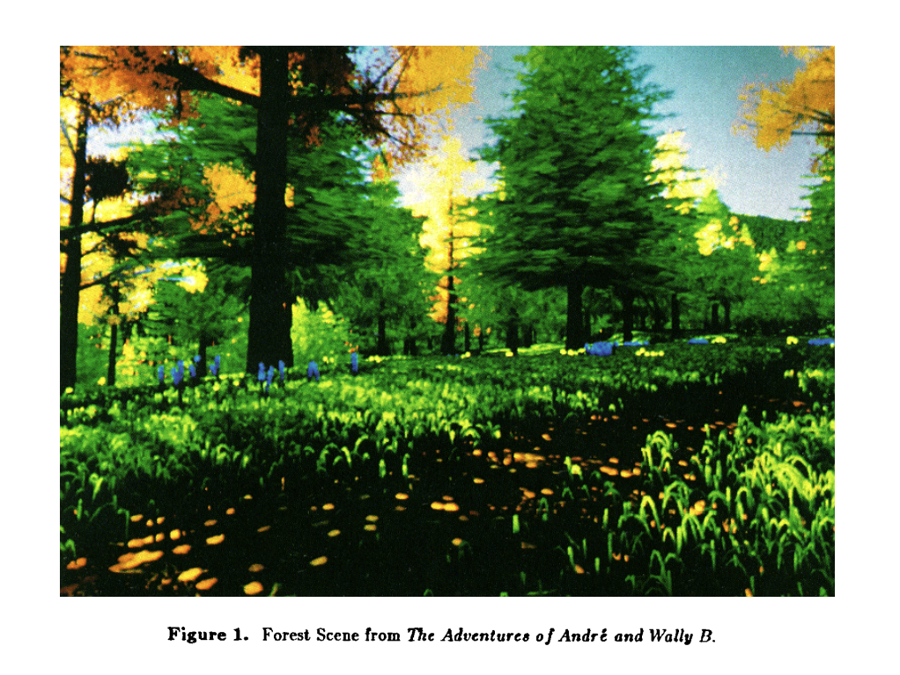

3-dimensional L-system with phototropism. I learned about this algorithm from The Algorithmic Beauty of Plants, which is awesome and historical. L-systems, combined with the invention of particle systems at Pixar, led to the creation of the forest scene from The Adventures of André & Wally B in 1984.

It was a landmark in computer graphics, I think, because it was the first 3D rendering which felt like a world. I still think it's very beautiful, even by today's standards, and it would be cool to recreate it one day.